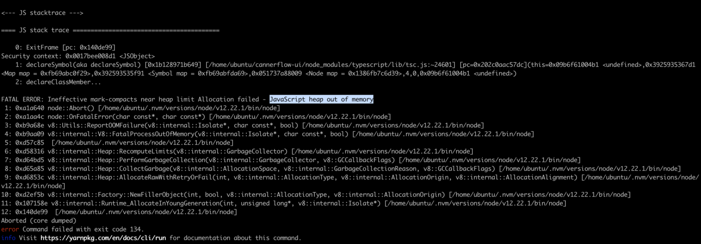
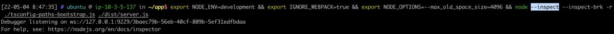
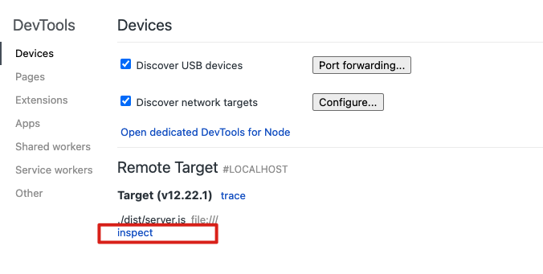
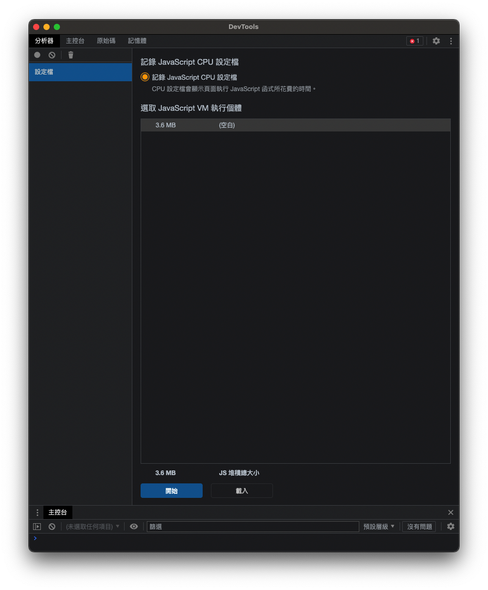
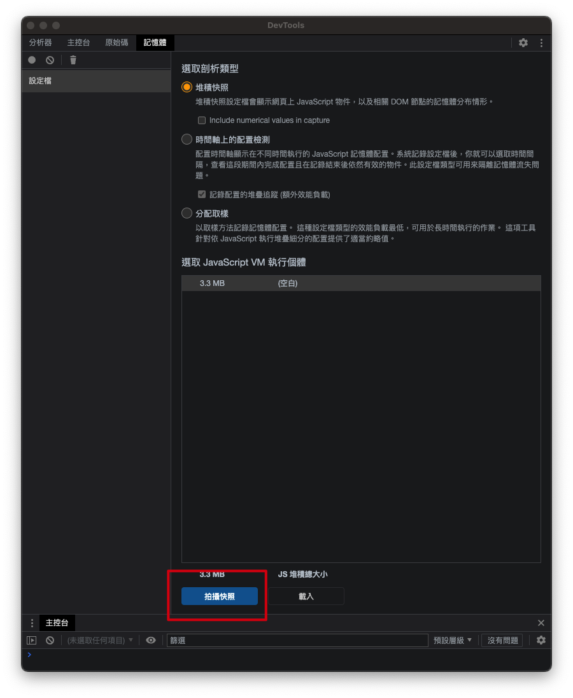
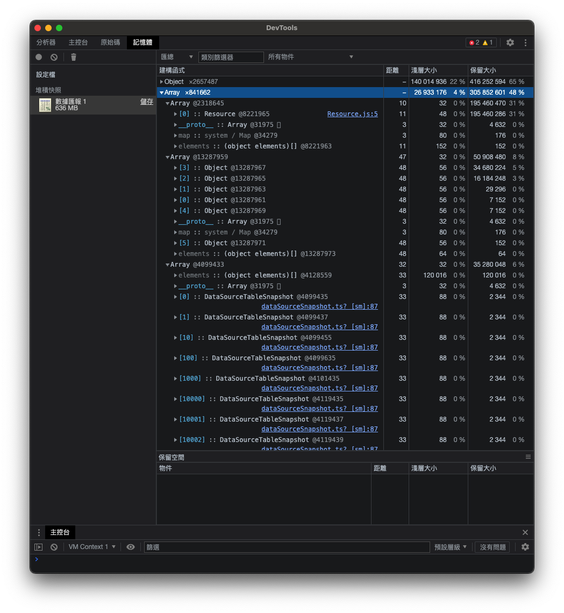
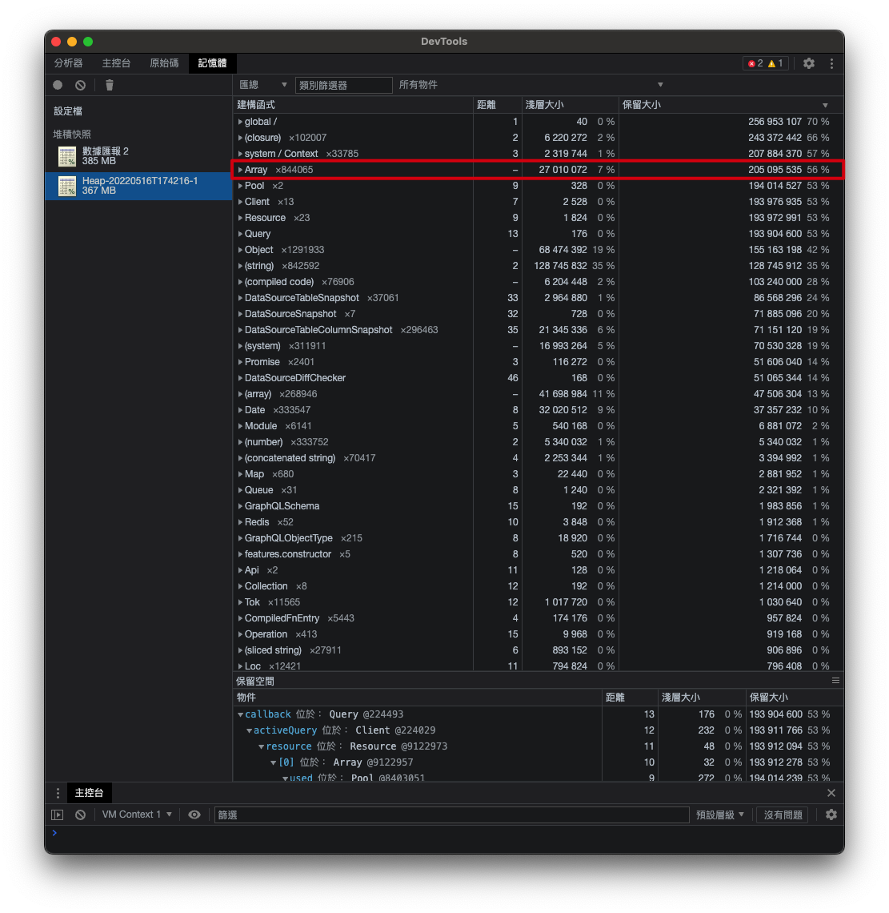
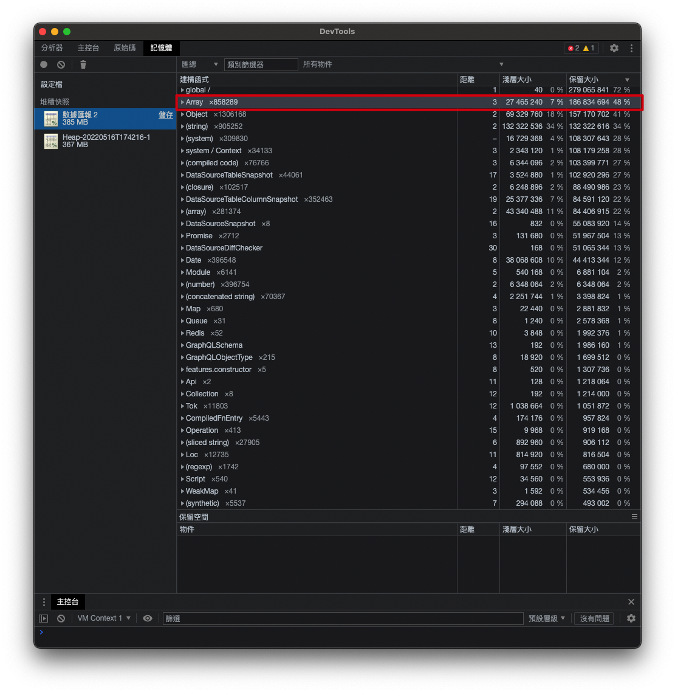

# [Node] 如何檢測 Node 程式的 Memory Leak 以及處理 out of memory 問題
身為一個 NodeJs 工程師，在架構一個 NodeJs 應用程式的生涯中或多或少應該都有碰過 Javascript heap out of memory 的狀況。
畢竟 NodeJs 本身是跑在 V8 Engine 的 Script Language，本身在 main thread 中 default 僅有 1GB (In 64-bit system) 的 memory 配額。

絕大多數時候其實都是單純 server 功能越來越多導致記憶體用量不夠，這個時候我們可以簡單地在執行程式時使用 --max-old-space-size 來手動配額足夠的記憶體給 Node 使用。
1
2// 使用 8GB 的記憶體來執行 app.js (這邊的單位是 KB)
$ node --max-old-space-size=8192 app.js
然而若是當我們已經配置足夠大的記憶體，確還是發生了 out of memory 的狀況呢？那應該十之八九是我們碰上了 memory leak 的問題了。
# 監測 memory heap 的使用量，檢測是否 memory leak
以往，我們要監測 memory heap 的使用需要利用諸如 heapdump 這類的 heap snapshot 工具來建立快照。但是在 version 6 以上的版本我們可以使用 --inspect flag 來指示 node 執行 app.js 期間開啟監測模式。
1
$ node --inspect index.js
如果你今天的 app 是使用 ts-node，你也可以使用以下指令來進入 node 的 inspect （ https://www.npmjs.com/package/ts-node#user-content-programmatic ）
1
$ node -r ts-node/register --inspect ./app.ts
node 會另外開啟一個 9229 的 port 來提供 debugger 使用。

你也可以使用 --inspect-brk ，這個 flag 會讓 node 監測模式啟動後停在第一個 statement。效果就類似設置一個 break point 在程式的第一行。
接下來，我們就可以開啟 Google Chrome 的 DevTools attach 到 debugger 來進行實時監控跟 debug 了。
在 google chrome 網址列輸入 about:inspect 可以進入到 Chrome 遠端開發工具畫面。

如果 prot 9229 已經開啟且被監聽，chrome 會自動找到相對應的 app 。之後我們可以點擊 inspect 進入監控畫面。

接下來點到 「記憶體」的選項，我們可以錄製記憶體的快照。

DevTools 會分析出 app 中各個變數結構的使用大小、對比 root 的深度、物件本身佔用的記憶體總量… 等等，一目瞭然。甚至連變數名稱都列出來給你了。

接下來我們要監測哪個變數導致記憶體增加就易如反掌了。
以我們專案自身為例，在程式執行起來時 Array 所佔的記憶體容量還沒有到很多

但是隨著某個 API 的呼叫，大大地增加了 Array 在記憶體中的使用量。

因此我們就可以據針對這個部分進行細部分析。來快速定位 memory leak 的原因。
# 參考資料
- Debugging Node.js with Chrome DevTools (這是一個國外的工程師的筆記，簡述了 google DevTools 針對 node inspect 的使用方式)
- 從你的 Node.js 專案裡找出 Memory leak，及早發現、及早治療！ (這篇講得很詳細，另外還講到如何做壓力測試，值得一讀)
- 其他有關 node Memory 相關的資訊：「 Is there a limit on the size of a string in JSON with Node.js? 」、「 How to monitor the memory usage of Node.js? 」